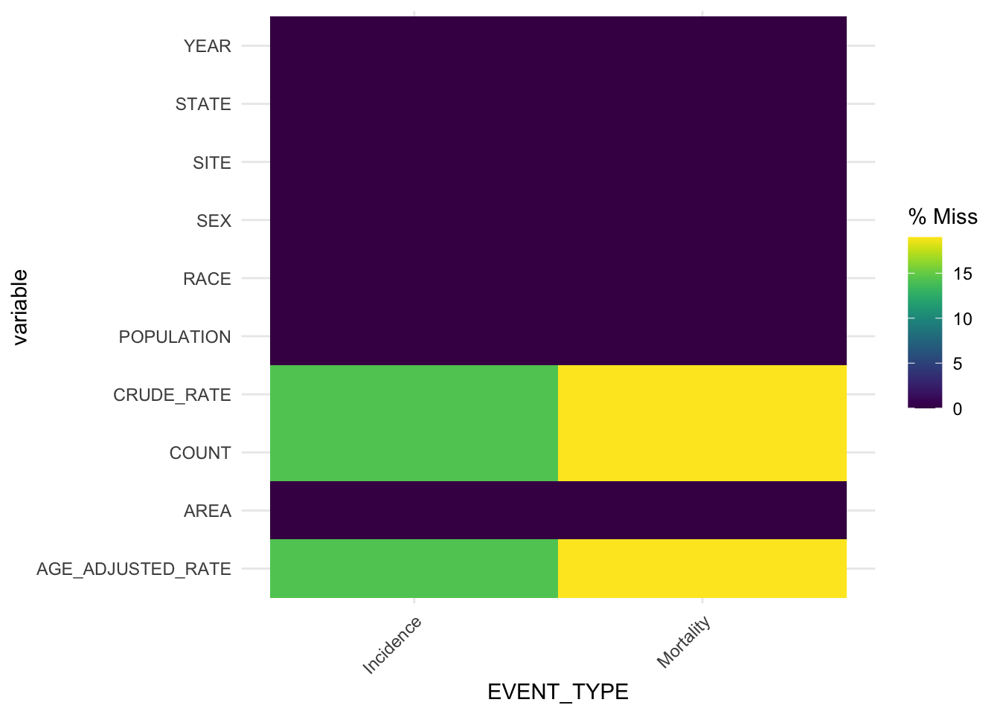

Chapter 4 Missing values
In the raw dataset, each row contains at least one missing value as the column called “WNO3” is empty. This column was supposed to record nitrate (NO3) concentration from Whatman filter. However, since the U.S. Environmental Protection Agency records NO3 concentration from Teflon filter only, we removed the entire column.
After removing “WNO3” and some other redundant columns, we ends up with 1337 rows with at least one missing values, 16596 total missing values, and the percentage of missing values over the entire dataset is around 1.78 percent.
After that, we would like to know if all variables have the same percentage of missing values. Therefore, we sum up missing values by column as shown below.
## SITE_ID TYPE DATEON DATEOFF TSO4 TNO3 TNH4
## 0 0 0 0 1220 1220 1220
## CA MG NA. K CL NSO4 NHNO3
## 1225 1223 1225 1298 1230 1222 1222
## WSO2 WNO3 TOTAL_SO2 TOTAL_NO3 FLOW_VOLUME VALID_HOURS COMMENT_CODES
## 1246 49124 1234 1212 902 892 0
## STD2LOCAL_CF TEMP_SOURCE QA_CODE UPDATE_DATE
## 17 0 0 0Notice that each pollutant concentration variables contain almost the same percentage of missing values. We tried to extract missing patterns using mi::missing_data.frame(). To save memory, we only input the first 20,000 data.
## NOTE: The following pairs of variables appear to have the same missingness pattern.
## Please verify whether they are in fact logically distinct variables.
## [,1] [,2]
## [1,] "TSO4" "TNO3"
## [2,] "TSO4" "TNH4"
## [3,] "TSO4" "MG"
## [4,] "TNO3" "TNH4"
## [5,] "TNO3" "MG"
## [6,] "TNH4" "MG"
## [7,] "NSO4" "NHNO3"
## [8,] "STD2LOCAL_CF" "TEMP_SOURCE"
The result is consistent to what we found before, [“TSO4”, “TNO3”, “TNH4”, “CA”, “MG”, “TSO4”] have the same missingness pattern.
Also we found out that within each “Side_ID”, the number of missing values is almost the same across each pollutant. We will further work on understanding if these is any patterns between missing values and date or locations. At this point, we would not directly remove these missing points as some missing values may link to other groups in the data.